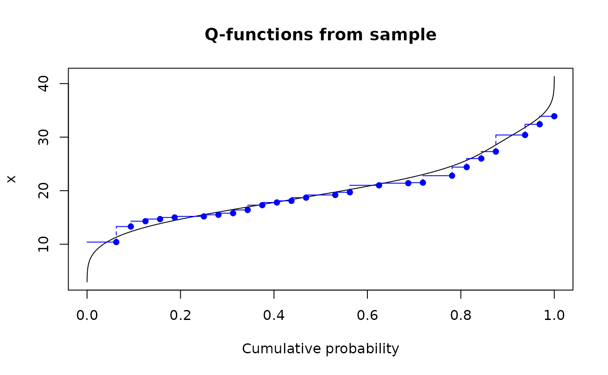

Package ‘pdqr’ supports two types of distributions:
- Type “discrete”: random variable has finite number of output values. It is explicitly defined by the collection of its values with their corresponding probability.
- Type “continuous”: there are infinite number of output values in the form of continuous random variable. It is explicitly defined by piecewise-linear density function.
Note that all distributions assume finite support (output values are bounded from below and above) and finite values of density function (density function in case of “continuous” type can’t go to infinity).
All new_*() functions create a pdqr-function of certain type (“discrete” or “continuous”) based on sample or data frame of appropriate structure:
-
Sample input is processed based on type. For “discrete” type it gets tabulated with frequency of unique values serving as their probability. For “continuous” type distribution density is estimated using
density()function if input has at least 2 elements. For 1 element special “dirac-like” pdqr-function is created: an approximation single number with triangular distribution of very narrow support (1e-8 of magnitude). Basically, sample input is converted into data frame of appropriate structure that defines distribution (see next list item). - Data frame input should completely define distribution. For “discrete” type it should have “x” and “prob” columns for output values and their probabilities. For “continuous” type - “x” and “y” columns for points, which define piecewise-linear continuous density function. Columns “prob” and “y” will be automatically normalized to represent proper distribution: sum of “prob” will be 1 and total square under graph of piecewise-linear function will be 1.
We will use the following data frame inputs in examples:
# For type "discrete"
dis_df <- data.frame(x = 1:4, prob = 4:1 / 10)
# For type "continuous"
con_df <- data.frame(x = 1:4, y = c(0, 1, 1, 1))This vignette is organized as follows:
- Four sections about how to create p-, d-, q-, and r-functions (both from sample and data frame).
- Section “Special cases”, which describes two special cases of pdqr-functions: dirac-like and boolean.
- Section “Using
density()arguments” describes how to usedensity()arguments to tweak smoothing during creation of “continuous” pdqr-functions. - “Metadata of pdqr-functions” describes the concept of metadata of pdqr-functions.
P-functions
P-function (analogue of p*() functions in base R) represents a cumulative distribution function of distribution.
From sample
# Treating input as discrete
p_mpg_dis <- new_p(mtcars$mpg, type = "discrete")
p_mpg_dis
#> Cumulative distribution function of discrete type
#> Support: [10.4, 33.9] (25 elements)
# Treating input as continuous
p_mpg_con <- new_p(mtcars$mpg, type = "continuous")
p_mpg_con
#> Cumulative distribution function of continuous type
#> Support: ~[2.96996, 41.33004] (511 intervals)
# Outputs are actually vectorized functions
p_mpg_dis(15:20)
#> [1] 0.18750 0.31250 0.34375 0.40625 0.46875 0.56250
p_mpg_con(15:20)
#> [1] 0.2185498 0.2804962 0.3465967 0.4143147 0.4818869 0.5478942
# You can plot them directly using base `plot()` and `lines()`
plot(p_mpg_con, main = "P-functions from sample")
lines(p_mpg_dis, col = "blue")
From data frame
p_df_dis <- new_p(dis_df, type = "discrete")
p_df_dis
#> Cumulative distribution function of discrete type
#> Support: [1, 4] (4 elements)
p_df_con <- new_p(con_df, type = "continuous")
p_df_con
#> Cumulative distribution function of continuous type
#> Support: [1, 4] (3 intervals)
plot(p_df_con, main = "P-functions from data frame")
lines(p_df_dis, col = "blue")
D-functions
D-function (analogue of d*() functions in base R) represents a probability mass function for “discrete” type and density function for “continuous”:
From sample
# Treating input as discrete
d_mpg_dis <- new_d(mtcars$mpg, type = "discrete")
d_mpg_dis
#> Probability mass function of discrete type
#> Support: [10.4, 33.9] (25 elements)
# Treating input as continuous
d_mpg_con <- new_d(mtcars$mpg, type = "continuous")
d_mpg_con
#> Density function of continuous type
#> Support: ~[2.96996, 41.33004] (511 intervals)
# Outputs are actually vectorized functions
d_mpg_dis(15:20)
#> [1] 0.03125 0.00000 0.00000 0.00000 0.00000 0.00000
d_mpg_con(15:20)
#> [1] 0.05888171 0.06450605 0.06726441 0.06788664 0.06703401 0.06469730
# You can plot them directly using base `plot()` and `lines()`
op <- par(mfrow = c(1, 2))
plot(d_mpg_con, main = '"continuous" d-function\nfrom sample')
plot(d_mpg_dis, main = '"discrete" d-function\nfrom sample', col = "blue")
par(op)From data frame
d_df_dis <- new_d(dis_df, type = "discrete")
d_df_dis
#> Probability mass function of discrete type
#> Support: [1, 4] (4 elements)
d_df_con <- new_d(con_df, type = "continuous")
d_df_con
#> Density function of continuous type
#> Support: [1, 4] (3 intervals)
op <- par(mfrow = c(1, 2))
plot(d_df_con, main = '"continuous" d-function\nfrom data frame')
plot(d_df_dis, main = '"discrete" d-function\nfrom data frame', col = "blue")
par(op)Q-functions
Q-function (analogue of q*() functions in base R) represents a quantile function, an inverse of corresponding p-function:
From sample
# Treating input as discrete
q_mpg_dis <- new_q(mtcars$mpg, type = "discrete")
q_mpg_dis
#> Quantile function of discrete type
#> Support: [10.4, 33.9] (25 elements)
# Treating input as continuous
q_mpg_con <- new_q(mtcars$mpg, type = "continuous")
q_mpg_con
#> Quantile function of continuous type
#> Support: ~[2.96996, 41.33004] (511 intervals)
# Outputs are actually vectorized functions
q_mpg_dis(c(0.1, 0.3, 0.7, 1.5))
#> [1] 14.3 15.8 21.5 NaN
q_mpg_con(c(0.1, 0.3, 0.7, 1.5))
#> [1] 12.53278 16.29969 22.62140 NaN
# You can plot them directly using base `plot()` and `lines()`
plot(q_mpg_con, main = "Q-functions from sample")
lines(q_mpg_dis, col = "blue")
From data frame
q_df_dis <- new_q(dis_df, type = "discrete")
q_df_dis
#> Quantile function of discrete type
#> Support: [1, 4] (4 elements)
q_df_con <- new_q(con_df, type = "continuous")
q_df_con
#> Quantile function of continuous type
#> Support: [1, 4] (3 intervals)
plot(q_df_con, main = "Q-functions from data frame")
lines(q_df_dis, col = "blue")
R-functions
R-function (analogue of r*() functions in base R) represents a random generation function. For “discrete” type it will generate only values present in input. For “continuous” function it will generate values from distribution corresponding to one estimated with density().
From sample
# Treating input as discrete
r_mpg_dis <- new_r(mtcars$mpg, type = "discrete")
r_mpg_dis
#> Random generation function of discrete type
#> Support: [10.4, 33.9] (25 elements)
# Treating input as continuous
r_mpg_con <- new_r(mtcars$mpg, type = "continuous")
r_mpg_con
#> Random generation function of continuous type
#> Support: ~[2.96996, 41.33004] (511 intervals)
# Outputs are actually functions
r_mpg_dis(5)
#> [1] 17.3 10.4 21.5 21.4 15.2
r_mpg_con(5)
#> [1] 16.30053 20.58094 16.80433 21.19017 19.96810
# You can plot them directly using base `plot()` and `lines()`
op <- par(mfrow = c(1, 2))
plot(r_mpg_con, main = '"continuous" r-function\nfrom sample')
plot(r_mpg_dis, main = '"discrete" r-function\nfrom sample', col = "blue")
par(op)From data frame
r_df_dis <- new_r(dis_df, type = "discrete")
r_df_dis
#> Random generation function of discrete type
#> Support: [1, 4] (4 elements)
r_df_con <- new_r(con_df, type = "continuous")
r_df_con
#> Random generation function of continuous type
#> Support: [1, 4] (3 intervals)
op <- par(mfrow = c(1, 2))
plot(r_df_con, main = '"continuous" r-function\nfrom data frame')
plot(r_df_dis, main = '"discrete" r-function\nfrom data frame', col = "blue")
par(op)Special cases
Dirac-like
When creating “continuous” pdqr-function with new_*() from single number, a special “dirac-like” pdqr-function is created. It is an approximation of single number with triangular distribution of very narrow support (1e-8 of magnitude):
r_dirac <- new_r(3.14, type = "continuous")
r_dirac
#> Random generation function of continuous type
#> Support: ~[3.14, 3.14] (2 intervals)
r_dirac(4)
#> [1] 3.14 3.14 3.14 3.14
# Outputs aren't exactly but approximately equal
dput(r_dirac(4))
#> c(3.13999999621714, 3.14000000258556, 3.13999999778332, 3.13999999147402
#> )Boolean
Boolean pdqr-function is a special case of “discrete” function, which values are exactly 0 and 1. Those functions are usually created after transformations involving logical operators (see vignette on transformation for more details). It is assumed that 0 represents that some expression is false, and 1 is for being true. Corresponding probabilities describe distribution of expression’s logical values. The only difference from other “discrete” pdqr-functions is in more detailed printing.
new_d(data.frame(x = c(0, 1), prob = c(0.25, 0.75)), type = "discrete")
#> Probability mass function of discrete type
#> Support: [0, 1] (2 elements, probability of 1: 0.75)
Using density() arguments
When creating pdqr-function of “continuous” type, density() is used to estimate density. To tweak its performance, supply its extra arguments directly to new_*() functions. Here are some examples:
plot(
new_d(mtcars$mpg, "continuous"), lwd = 3,
main = "Examples of `density()` options"
)
# Argument `adjust` of `density()` helps to define smoothing bandwidth
lines(new_d(mtcars$mpg, "continuous", adj = 0.3), col = "blue")
# Argument `n` defines number of points to be used in piecewise-linear
# approximation
lines(new_d(mtcars$mpg, "continuous", n = 5), col = "green")
# Argument `cut` defines the "extending" property of density estimation.
# Using `cut = 0` assumes that density can't go outside of input's range
lines(new_d(mtcars$mpg, "continuous", cut = 0), col = "magenta")
Metadata of pdqr-functions
Every pdqr-function has metadata, information which describes underline distribution and pdqr-function. Family of meta_*() functions are implemented to extract that information:
-
“x_tbl” metadata (returned by
meta_x_tbl()) completely defines distribution. It is a data frame with structure depending on type of pdqr-function:- For “discrete” type it has columns “x” (output values), “prob” (their probability), and “cumprob” (their cumulative probability).
- For “continuous” type it has columns “x” (knots of piecewise-linear density), “y” (density values at those points), “cumprob” (their cumulative probability).
-
Pdqr class (returned by
meta_class()) - class of pdqr-function. This can be one of “p”, “d”, “q”, “r”. Represents how pdqr-function describes underlying distribution. -
Pdqr type (returned by
meta_type()) - type of pdqr-function. This can be one of “discrete” or “continuous”. Represents type of underlying distribution. -
Pdqr support (returned by
meta_support()) - support of distribution. This is a range of “x” column from “x_tbl” metadata.
# Type "discrete"
d_dis <- new_d(1:4, type = "discrete")
meta_x_tbl(d_dis)
#> x prob cumprob
#> 1 1 0.25 0.25
#> 2 2 0.25 0.50
#> 3 3 0.25 0.75
#> 4 4 0.25 1.00
meta_class(d_dis)
#> [1] "d"
meta_type(d_dis)
#> [1] "discrete"
meta_support(d_dis)
#> [1] 1 4
# Type "continuous"
p_con <- new_p(1:4, type = "continuous")
head(meta_x_tbl(p_con))
#> x y cumprob
#> 1 -1.290542 0.001477707 0.000000e+00
#> 2 -1.275706 0.001568091 2.259340e-05
#> 3 -1.260870 0.001660241 4.654081e-05
#> 4 -1.246034 0.001759392 7.190728e-05
#> 5 -1.231199 0.001862292 9.877253e-05
#> 6 -1.216363 0.001970915 1.272068e-04
meta_class(p_con)
#> [1] "p"
meta_type(p_con)
#> [1] "continuous"
meta_support(p_con)
#> [1] -1.290542 6.290542
# Dirac-like "continuous" function
r_dirac <- new_r(1, type = "continuous")
dput(meta_x_tbl(r_dirac))
#> structure(list(x = c(0.99999999, 1, 1.00000001), y = c(0, 100000000.052636,
#> 0), cumprob = c(0, 0.5, 1)), row.names = c(NA, -3L), class = "data.frame")
dput(meta_support(r_dirac))
#> c(0.99999999, 1.00000001)
# `meta_all()` returns all metadata in a single list
meta_all(d_dis)
#> $class
#> [1] "d"
#>
#> $type
#> [1] "discrete"
#>
#> $support
#> [1] 1 4
#>
#> $x_tbl
#> x prob cumprob
#> 1 1 0.25 0.25
#> 2 2 0.25 0.50
#> 3 3 0.25 0.75
#> 4 4 0.25 1.00For more details go to help page of meta_all().